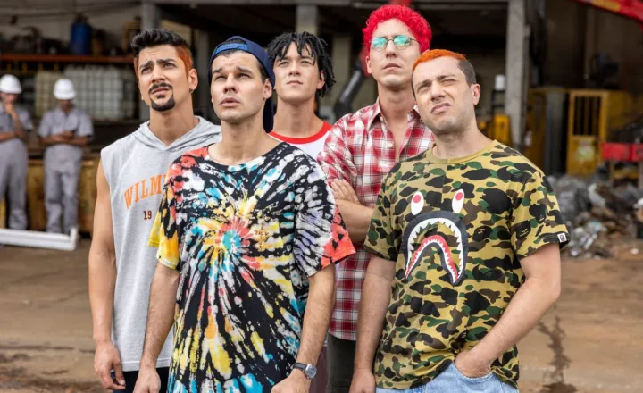

“Mamonas Assassinas: O Filme”
Com direção de Edson Spinello e roteiro assinado por Carlos Lombardi, a cinebiografia acompanha a trajetória da banda que marcou o país, formada pelos músicos Dinho, Sérgio Reoli, Samuel Reoli, Júlio Rasec e Bento, e foi um dos maiores sucesso de rock do Brasil.ㅤㅤㅤㅤㅤㅤㅤㅤ
Trailer aqui!